Java 中的 Applet
Applet 是一种特殊的 Java 程序，在支持 Java 的浏览器中运行。这是第一个可以使用浏览器在网络上运行的 Java 程序。Applet 通常嵌入在网页中，并在浏览器中运行。
换句话说，我们可以说 Applet 是小型的 Java 应用，可以在互联网服务器上访问，通过互联网传输，并且可以作为网络文档的一部分自动安装和运行。
在用户接收到 Applet 之后，Applet 可以产生图形用户界面。它对资源的访问有限，因此它可以运行复杂的计算，而不会引入病毒或破坏数据完整性的风险。
要创建 Applet，类必须扩展 java.applet.Applet 类。
Applet 类没有任何 main()方法。使用 JVM 查看。JVM 可以使用网络浏览器的插件或者单独的运行时环境来运行 Applet 应用。
JVM 创建一个 applet 类的实例，并调用init()方法来初始化 Applet。
注意: Java Applet 从 Java 9 开始就被弃用了。这意味着 Applet API 不再被认为是重要的。
Java Applet 的生命周期
以下是 Applet 中的各个阶段
- Applet 已初始化。
- Applet 已启动
- Applet 已绘制。
- Applet 已停止。
- Applet 被销毁。
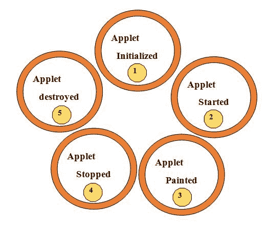
简单的 Applet
import java.awt.*;
import java.applet.*;
public class Simple extends Applet
{
public void **paint**(Graphics g)
{
g.drawString("A simple Applet", 20, 20);
}
}
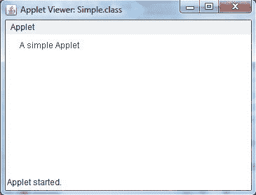
每个 Applet 应用必须导入两个包- java.awt和java.applet。
java.awt.*导入抽象窗口工具包(AWT)类。Applet 通过 AWT 与用户交互(直接或间接)。AWT 支持基于窗口的图形用户界面。java.applet.*导入 applet 包，其中包含 Applet 类。您创建的每个 applet 都必须是 Applet 类的子类。
程序中的类必须声明为公共的，因为它将被程序外的代码访问。每个 Applet 应用都必须声明一个paint()方法。这个方法是由 AWT 类定义的，必须被 applet 覆盖。每当 Applet 需要重新显示其输出时，都会调用 paint()方法。关于 applet 应用需要注意的另一件重要的事情是，applet 的执行并不是从main()方法开始的。事实上，Applet 应用没有任何main()方法。
Applet 的优势
- 因为它在客户端工作，所以需要非常少的响应时间。
- 它可以在任何运行 JVM 的浏览器上运行。
Applet 类
Applet 类为 applet 的执行提供了所有必要的支持，比如 applet 的初始化和销毁。它还提供了加载和显示图像的方法以及加载和播放音频剪辑的方法。
Applet 框架
大多数 Applet 会覆盖这四种方法。这四种方法形成了 Applet 生命周期。
- init() : init()是第一个被调用的方法。这是变量初始化地方。这个方法在 applet 运行时只被调用一次。
- start():init()之后调用 start()方法。调用此方法是为了在 Applet 停止后重新启动它。
- stop() : 调用 stop()方法，在 applet 不可见时挂起不需要运行的线程。
- destroy() : 当你的 Applet 需要从内存中完全移除时，会调用 destroy()方法。
注意:stop()方法总是在 destroy()方法之前调用。
Applet 框架示例
import java.awt.*;
import java.applet.*;
public class AppletTest extends Applet
{
public void **init()**
{
//initialization
}
public void **start** ()
{
//start or resume execution
}
public void **stop()**
{
//suspend execution
{
public void **destroy()**
{
//perform shutdown activity
}
public void **paint** (Graphics g)
{
//display the content of window
}
}
Applet 示例
import java.applet.*;
import java.awt.*;
public class MyApplet extends Applet
{
int height, width;
public void init()
{
height = getSize().height;
width = getSize().width;
setName("MyApplet");
}
public void paint(Graphics g)
{
g.drawRoundRect(10, 30, 120, 120, 2, 3);
}
}
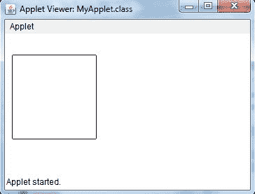
Applet 中的参数
可以在 Applet 中使用<【PARAM…>标签应用用户定义的参数。每个
示例:
name = color
Value = red
语法:
<PARAM name = ……… Value = “………” >
在 applet 代码中，applet 可以通过名称引用参数，然后找到它的值。
处理和设置参数最重要的两件事是 HTML 文档中的标记和解析该参数的 Applet 代码。
init()方法用于获取标签中定义的参数。getParameter()方法用于获取参数。
在 Applet 中，参数在加载时传递给 Applet。
示例:
java 停止
import java.applet.*;
import java.awt.*;
public class param extends Applet
{
String str;
public void init()
{
str=getParameter("pname");
if (str == null)
str = "Welcome to studytonight.com";
str = "Hello " + str;
}
public void paint(Graphics g)
{
g.drawString(str, 200, 200);
}
}
我的钱. html
<html>
<applet code=param.class height=300 width=300>
<param Name="pname" value="Welcome to studytonight.com">
</applet>
</html>
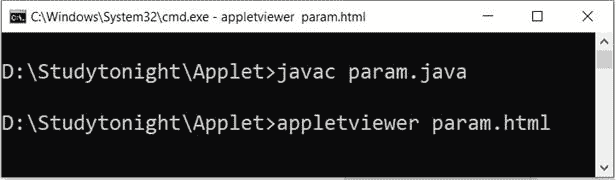
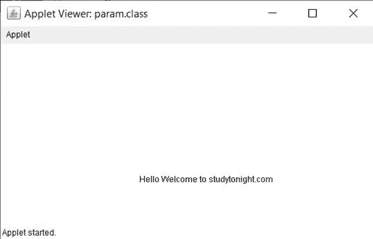
如何运行 Applet 程序
Applet 程序的编译方式与您编译控制台程序的方式相同。然而，有两种方法可以运行 Applet。
- 在兼容 Java 的网络浏览器中执行 Applet。
- 使用 Applet 查看器，如标准工具 Applet 查看器。Applet 查看器在窗口中执行您的 Applet
要在网络浏览器中执行 Applet，请在同一目录中创建简短的 HTML 文件。在文件的正文标签内，包含以下代码。(Applet标签加载 Applet 类)
< applet code = "MyApplet" width=400 height=400 >
< /applet >
运行 HTML 文件
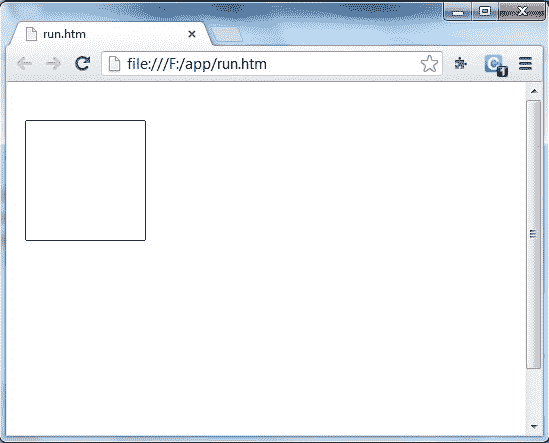
使用 Applet 查看器运行 Applet
要使用 Applet 查看器执行 Applet，请编写如上所述的短 HTML 文件。如果你将其命名为run.htm，那么下面的命令将运行你的 Applet 程序。
f:/>appletviewer run.htm
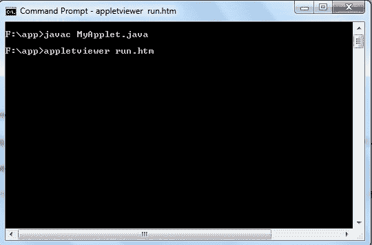
Applet 中的图形
在 Applet 中，java.awt.Graphicsclass 提供了使用图形的方法。
下面是图形类的方法。
| 不，先生。 | 方法 | 描述 | | one | 公共抽象空拉绳(字符串，int x，int y) | 用于绘制指定的字符串。 | | Two | 公共 void drawRect(int x，int y，int 宽度，int 高度) | 用于绘制指定宽度和高度的矩形。 | | three | 公共抽象 void fillRect(int x，int y，int 宽度，int 高度) | 用于绘制具有指定宽度和高度的默认颜色的矩形。 | | four | 公共抽象 void drawOval(int x，int y，int 宽度，int 高度) | 用于绘制指定宽度和高度的椭圆形。 | | five | 公共抽象 void fillOval(int x，int y，int 宽度，int 高度) | 用于绘制具有指定宽度和高度的默认颜色的椭圆形。 | | six | 公共抽象 void drawLine(int x1，int y1，int x2，int y2) | 用于在点(x1，x1)和(x2，y2)之间画线。 | | seven | 公共抽象 boolean image(img image、int x、int y、ImageObserver) | 用于绘制指定的图像。 | | eight | 公共抽象空绘图弧(int x，int y，int 宽度，int 高度，intstartAngle，intarcAngle) | 用于画圆弧。 | | nine | 公共抽象空填充弧(int x，int y，int 宽度，int 高度，intstartAngle，intarcAngle) | 用于填充圆弧。 | | Ten | 公共抽象空集合颜色 | 用于设置对象的颜色。 | | Eleven | 公共抽象空集字体(字体) | 用于设置字体。 |
示例:
graphicsdemo 1 . java
import java.applet.Applet;
import java.awt.*;
public class GraphicsDemo1 extends Applet
{
public void paint(Graphics g)
{
g.setColor(Color.black);
g.drawString("Welcome to studytonight",50, 50);
g.setColor(Color.blue);
g.fillOval(170,200,30,30);
g.drawArc(90,150,30,30,30,270);
g.fillArc(270,150,30,30,0,180);
g.drawLine(21,31,20,300);
g.drawRect(70,100,30,30);
g.fillRect(170,100,30,30);
g.drawOval(70,200,30,30);
}
}
GraphicsDemo1.html
<html>
<body>
<applet code="GraphicsDemo1.class" width="300" height="300">
</applet>
</body>
</html>
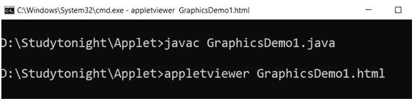
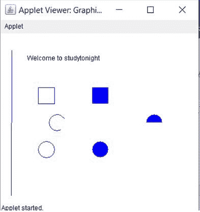
在 Applet 中使用图像
在 Applet 程序中，也可以使用图像
java.awt.Image 类用于表示图像。
java.applet、java.awt 和 java.awt.image 是用于事件处理的包。
加载图像
在 Applet 中，使用 getImage() 方法加载图像。当调用 Applet 的构造器时，此方法有效。总是建议在 init() 方法中调用构造器。
这里有一些例子:
image1 = getImage(getCodeBase()、“image 1 . gif”)； image 2 = getimage(getdocumentbase()，" image 1 . JPEG ")；【image 3 = getimage(新 URL(" http://Java . sun . com/graphics/image . gif ")；
显示图像
在 Applet 中，使用 drawImage()方法显示图像。此方法由 Graphics 对象提供，该对象被传递给 paint()方法。
示例:
aiming . Java
import java.awt.*;
import java.applet.*;
public class Aimage extends Applet
{
Image img1;
public void init()
{
img1=getImage(getDocumentBase(),"icon.png");
}
public void paint(Graphics g)
{
g.drawImage(img1,100,100,this);
}
}
aiming . html
<html>
<applet code=Aimage height=300 width=300>
</applet>
</html>
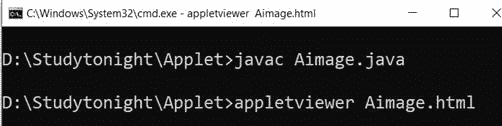
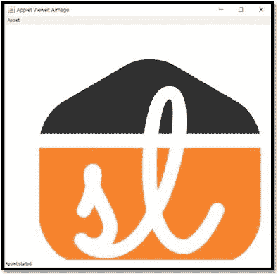
Applet 中的事件处理
在 Applet 中，我们还可以执行事件处理。
下面是一个事件处理的例子，点击按钮时会打印一条消息。
示例:
EventAppletDemo.java
import java.applet.*;
import java.awt.*;
import java.awt.event.*;
public class EventAppletDemo extends Applet implements ActionListener
{
Button b1;
TextField tf1;
public void init()
{
tf1=new TextField();
tf1.setBounds(30,40,200,20);
b1=new Button("Click");
b1.setBounds(80,150,60,50);
add(b1);
add(tf1);
b1.addActionListener(this);
setLayout(null);
}
public void actionPerformed(ActionEvent e)
{
tf1.setText("Welcome to studytonight");
}
}
Myapplet.html
<html>
<body>
<applet code="EventAppletDemo.class" width="300" height="300">
</applet>
</body>
</html>
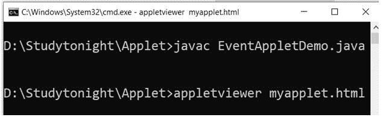
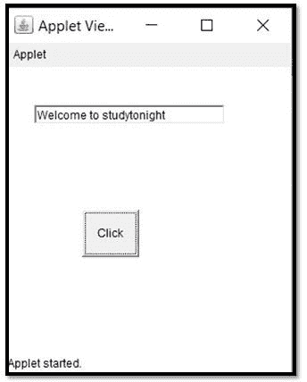
Applet 中的动画
在 Applet 中，我们还可以使用 gif 图像在程序中创建动画。下面是一个使用 drawImage()方法的示例，该方法属于 Graphics 类，用于显示图像。
注意:下载下面例子的 gif 文件
示例:
动画演示. java
import java.awt.*;
import java.applet.*;
public class AnimationDemo extends Applet
{
Image p;
public void init()
{
p = getImage(getDocumentBase(),"ball.gif");
}
public void paint(Graphics g)
{
for(inti=0;i<500;i++)
{
g.drawImage(p, i,50, this);
try
{
Thread.sleep(100);
}
catch(Exception e)
{}
}
}
}
动画演示. html
<html>
<body>
<applet code="AnimationDemo.class" width="300" height="300">
</applet>
</body>
</html>
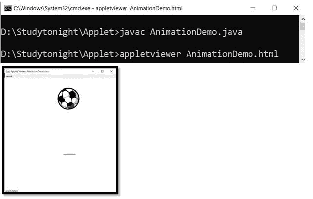
日本管道等级
在 Java 中，JApplet 是 swing 的公共类。japlet 在 java.applet.Applet 中扩展了这个类。japlet 在 JVM 或 Applet 查看器的帮助下生成一个字节码。JApplet 可以用任何编程语言编写，然后可以编译成 Java 字节码。
示例:
JAppletDemo.java
import java.applet.*;
import javax.swing.*;
import java.awt.event.*;
public class JAppletDemo extends JApplet implements ActionListener
{
JButton b;
JTextField t;
public void init()
{
t=new JTextField();
t.setBounds(30,40,220,20);
b=new JButton("Click");
b.setBounds(80,150,70,40);
add(b);
add(t);
b.addActionListener(this);
setLayout(null);
}
public void actionPerformed(ActionEvent e)
{
t.setText("Welcome to studytonight.com");
}
}
JAppletDemo.html
<html>
<body>
<applet code="JAppletDemo.class" width="300" height="300">
</applet>
</body>
</html>
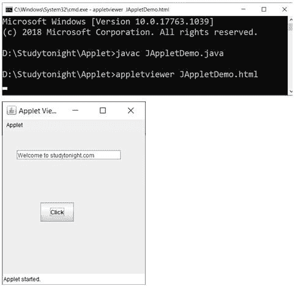
在 Applet 中绘画
下面是一个在 Applet 中使用 MouseMotionListener 的 mouseDragged()方法进行绘画的例子。
示例:
PaintingDemo.java
import java.awt.*;
import java.awt.event.*;
import java.applet.*;
public class PaintingDemo extends Applet implements MouseMotionListener
{
public void init()
{
addMouseMotionListener(this);
setBackground(Color.white);
}
public void mouseDragged(MouseEvent me)
{
Graphics g=getGraphics();
g.setColor(Color.black);
g.fillOval(me.getX(),me.getY(),5,5);
}
public void mouseMoved(MouseEvent me)
{}
}
PaintingDemo.html
<html>
<body>
<applet code="PaintingDemo.class" width="300" height="300">
</applet>
</body>
</html>
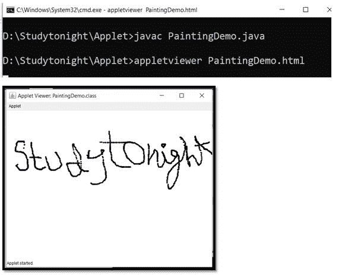
Applet 中的模拟时钟
在 java 中，Applet 可以用来创建一个模拟时钟。为模拟时钟创建程序，需要导入 java.apple、java.awt、java.util 和 java.text 包。还使用了日期和时间功能。数学函数在创建模拟时钟中起着重要作用。下面是一个创建模拟时钟的程序。
示例:
模拟演示 1.java
import java.applet.*;
import java.awt.*;
import java.util.*;
import java.text.*;
public class AnalogDemo1 extends Applet implements Runnable
{
int width, height;
Thread t = null;
booleanthreadSuspended;
int hours=0, minutes=0, seconds=0;
String timeString = "";
public void init()
{
width = getSize().width;
height = getSize().height;
setBackground( Color.black );
}
public void start()
{
if ( t == null )
{
t = new Thread( this );
t.setPriority( Thread.MIN_PRIORITY );
threadSuspended = false;
t.start();
}
else
{
if ( threadSuspended )
{
threadSuspended = false;
synchronized( this )
{
notify();
}
}
}
}
public void stop()
{
threadSuspended = true;
}
public void run() {
try {
while (true) {
Calendar cal = Calendar.getInstance();
hours = cal.get( Calendar.HOUR_OF_DAY );
if ( hours> 12 ) hours -= 12;
minutes = cal.get( Calendar.MINUTE );
seconds = cal.get( Calendar.SECOND );
SimpleDateFormat formatter = new SimpleDateFormat( "hh:mm:ss", Locale.getDefault() );
Date date = cal.getTime();
timeString = formatter.format( date );
if ( threadSuspended ) {
synchronized( this ) {
while ( threadSuspended ) {
wait();
}
}
}
repaint();
t.sleep( 1000 );
}
}
catch (Exception e) { }
}
void drawHand( double angle, int radius, Graphics g ) {
angle -= 0.5 * Math.PI;
int x = (int)( radius*Math.cos(angle) );
int y = (int)( radius*Math.sin(angle) );
g.drawLine( width/2, height/2, width/2 + x, height/2 + y );
}
void drawWedge( double angle, int radius, Graphics g ) {
angle -= 0.5 * Math.PI;
int x = (int)( radius*Math.cos(angle) );
int y = (int)( radius*Math.sin(angle) );
angle += 2*Math.PI/3;
int x2 = (int)( 5*Math.cos(angle) );
int y2 = (int)( 5*Math.sin(angle) );
angle += 2*Math.PI/3;
int x3 = (int)( 5*Math.cos(angle) );
int y3 = (int)( 5*Math.sin(angle) );
g.drawLine( width/2+x2, height/2+y2, width/2 + x, height/2 + y );
g.drawLine( width/2+x3, height/2+y3, width/2 + x, height/2 + y );
g.drawLine( width/2+x2, height/2+y2, width/2 + x3, height/2 + y3 );
}
public void paint( Graphics g ) {
g.setColor( Color.pink );
drawWedge( 2*Math.PI * hours / 12, width/5, g );
drawWedge( 2*Math.PI * minutes / 60, width/3, g );
drawHand( 2*Math.PI * seconds / 60, width/2, g );
g.setColor( Color.white );
g.drawString( timeString, 10, height-10 );
}
}
AnalogueDemo1.html
<html>
<body>
<applet code="AnalogDemo1.class" width="300" height="300">
</applet>
</body>
</html>
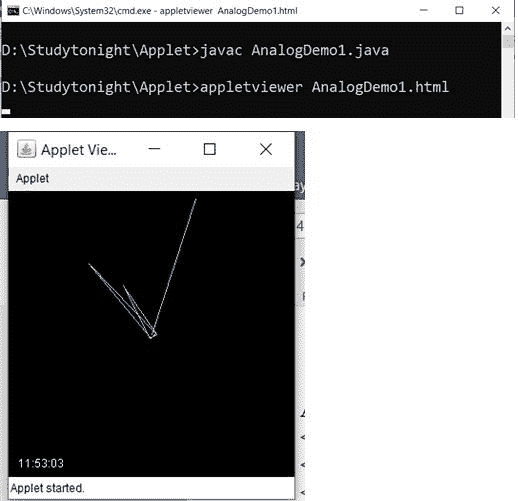
Applet 中的数字时钟
在 java 中，Applet 可以用来创建数字时钟。为了给数字钟创建一个程序，需要导入 java.apple、java.awt、java.util 和 java.text 包。还使用了日期和时间功能。下面是一个创建数字时钟的程序。
示例:
DigitalClockDemo1.java
import java.applet.*;
import java.awt.*;
import java.util.*;
import java.text.*;
public class DigitalClockDemo1 extends Applet implements Runnable
{
Thread t = null;
int h=0, m=0, s=0;
String timeString = "";
public void init()
{
setBackground( Color.black);
}
public void start()
{
t = new Thread( this );
t.start();
}
public void run()
{
try
{
while (true)
{
Calendar cal = Calendar.getInstance();
h = cal.get( Calendar.HOUR_OF_DAY );
if ( h> 12 ) h -= 12;
m = cal.get( Calendar.MINUTE );
s = cal.get( Calendar.SECOND );
SimpleDateFormat f = new SimpleDateFormat("hh:mm:ss");
Date date = cal.getTime();
timeString = f.format( date );
repaint();
t.sleep( 1000 );
}
}
catch (Exception e) { }
}
public void paint( Graphics g )
{
g.setColor( Color.white );
g.drawString( timeString, 50, 50 );
}
}
DigitalClockDemo1.html
<html>
<body>
<applet code="DigitalClockDemo1.class" width="300" height="300">
</applet>
</body>
</html>
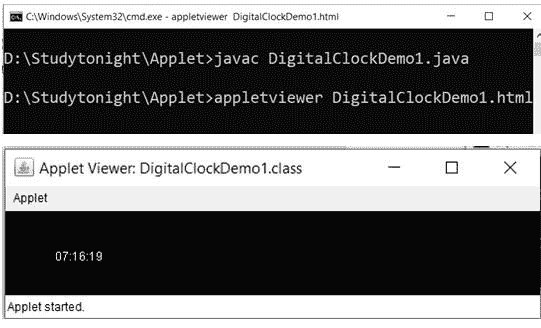